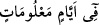

Bunlar günahtan sakınanlar içindir. Allah’dan korkun ve bilin ki hepiniz O’nun
huzurunda toplanacaksınız.
Hac menâsikinin açıklanmasına devam edilerek buyruluyor ki: Allah’ı zikrediniz.
Yâni namazlarınızın akabinde, şeytan taşlarken, kurbanlarınızı keserken ve diğer
zamanlarda tekbir getirin; “Allahu Ekber” deyin, “Bismillahi Allahu Ekber” deyin.
O’nun yüceliğini dâima zikredin. Bu tekbirlerinizi sayılı günler içinde; yâni bayram
günü ile teşrik günleri denilen üç gün içinde yapın. Bu günlerin birincisi Zilhicce’nin
11. günü olan ve hacıların Mina’da karar kıldıkları gündür. Bu güne “yevmü’l-karar:
Karar kılma günü” denir. İkinci gün de “yevmü’n-nefri’l-evvel: Birinci ayrılma
günü”dür. Bu güne bu adın verilmesine sebeb, hacılardan bazılarının o gün Mina’dan
ayrılmış olmalarıdır. Üçüncüsü de “Yevmü’n-nefri’s-sânî: İkinci ayrılma günü” denilen
gündür. İşte bu üç gün ve Zilhicce’nin onuncu günü olan Kurban bayramının birinci
günü, şeytan taşlama ve namazların akabinde teşrik tekbiri getirilir. Hadis-i şerifte şöyle
vârid olmuştur: “Arefe gününden itibaren teşrik günlerinin sonuna kadar her namazın
peşinde tekbir getir.”[129]
Âyette bu günlerin “Sayılı günler” şeklinde zikredilmesi sayıca az olmaları
itibariyledir. Nitekim bir başka âyet-i kerîmede “Sayılı birkaç dirhem” (Yûsuf, 12/20)
buyurularak Yûsuf (a.s.)’ın az parayla satıldığına işâret edilmiştir. Hac sûresindeki
“belli günlerde Allah’ın ismini anmaları” (el-Hac 22/28) âyetindeki “__WORD__ :
belli günler” Zilhicce’nin ilk on günüdür. Bu günlerin sonuncusu, kurban bayramının
birinci günüdür.
Kurban bayramının birinci gününden sonraki üç günün, ilk ikisinde şeytan taşlamayı
bitirdikten sonra, üçüncü günü için beklemeyip de Mina’dan ayrılmak isteyen kimseye,
bu aceleciliği sebebiyle herhangi bir günah yoktur. Böyle yapmasına ruhsat verilmiştir.
Ebû Hanîfe’ye göre böyle bir kimse, üçüncü günün (ki bayramın dördüncü günüdür)
fecr-i sâdıkı doğmadan önce Mina’dan ayrılmalıdır.
Konuyu hulâsa edecek olursak; hacı, teşrik günlerinin birinci ve ikincisinde (bayramın
ikinci ve üçüncü günü) Mina’da geceler. Bu günlerin her birinde, yedişer taştan üç
şeytana zevaldan sonra yirmi bir taş atmış olur. Bunları yaptıktan sonra Mina’da
gecelemeyi terkedebilir. Bu, deve çobanlarına ve hacılara su dağıtanlara verilmiş bir
ruhsattır. Yine bunun gibi, ikinci teşrik günü (bayramın üçüncü günü) şeytan taşlayan
kimse de bu ruhsattan faydalanabilir. Fakat ikinci günü güneş batıncaya kadar Mina’dan
ayrılmayan kişinin, üçüncü günün (bayramın döndüncü günü) gecesinde de Mina’da
kalması ve üçüncü günün taşlamalarını yapması ve daha sonra ayrılması vâcibtir.
Kim de erkenden ayrılmaz da üçüncü günün şeytan taşlamalarını da -ister zevalden
önce isterse sonra olsun- yaparsa -ki bu günkü uygulama bu şekildedir-[130] ona da bu
hareketinden dolayı bir günah yoktur. İmam Şâfiî ve İmameyn’in (İmam Muhammed ve
Ebû Yusuf) görüşü de budur. Bu demektir ki hacılar bu konuda muhayyerdirler. Dileyen
ikinci günden sonra ayrılır, dileyen üçüncü günden sonra. “Şayet, te’hîr ta’cîl’den yâni